近段时间由于在做ucos-iii的移植，所以就顺便了解下STM32的启动过程。经过查阅各种官方文献和对代码进行单步跟踪，详细地叙述了STM32加电启动的具体过程。对于关键性的语句都指明了出处。下面将学习成果分享给大家，由于笔者知识有限，不当之处敬请指出。
为了更好的说明问题，先来看STM32的内存映射（以STM32L1xx为例）
由于固定的内存映射，代码区（code area）从0x00000000开始，通过指令总线（ICode Bus）和数据总线（DCode Bus）访问。数据区（SRAM）从0x20000000开始，通过系统总线（System Bus）访问。Cortex™-M3 CPU总是通过指令总线（ICode Bus）取得复位向量，这就意味着启动空间（boot space）只能处于代码区（code area），典型的就是Flash。STM32系列使用了一种特殊的机制，能够从代码区以外的区域启动（如，内部的SRAM）。（《cortex-m3编程指南》）
这就意味着，STM32系列可以有3种启动模式，由BOOT1与BOOT0的设置决定选择Flash、System memory还是SRAM作为启动空间（boot space）。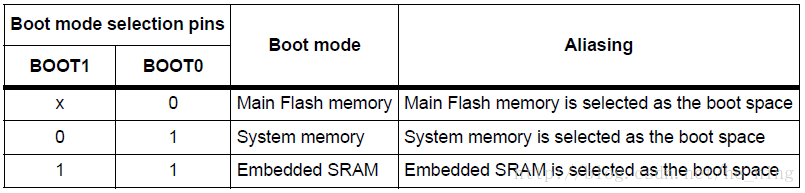
STM32把从0x00000000到0x0005FFFF的区域作为启动空间（boot space）的别名区。
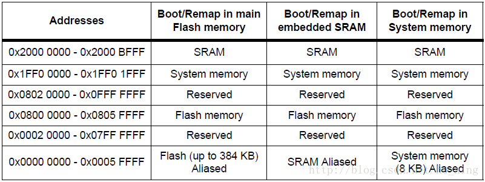
从上面两个表中可以看出：
当从主闪存（Main Flash memory）启动时，启动空间别名区映射到Flash。
当从系统内存（System memory）启动时，启动空间别名区映射到System memory。
当从内部SRAM（Embedded SRAM）启动时，启动空间别名区映射到SRAM。
注：默认是这样的映射关系，但上述的映射关系启动后可以由软件修改（通过修改SYSCFG启动器的MEM_MODE位域）。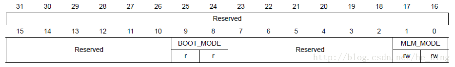
这样，Flash、System memory和SRAM分别可以从别名区和原始地址处访问。
Flash:访问地址为0x00000000或0x08000000
System memory:访问地址为0x00000000或0x1FF00000
SRAM：启动时地址为0x00000000或0x20000000（STM32Fxx的参考手册上说，启动后只能在0x20000000开始访问，即启动后这个映射消失，需要重定位中断向量表，这是特例）
System memory内置了ST提供的boot loader，可以通过该boot loader下载程序到Flash中。
用户程序实际只能存储在Flash中，且能在Flash和SRAM中执行（因为cortex-m3核采用哈佛结构，代码可直接在Flash运行，冯•诺依曼结构则必须将代码拷贝至RAM运行）。
Flash就像是电脑的硬盘，用于存储代码。
System memory就像是电脑的ROM，里面的程序有芯片厂商写好，用户不可改写。
SRAM就像是电脑的内存，里面的数据都是动态的，掉电就丢失的，用于建立堆栈等。
对于用户代码来说，只需要考虑从Flash启动和从SRAM启动两种情况。
了解上述映射关系之后，就可以讨论中断向量表了。
Cortex-m3核的中断向量表是不变的（中断向量表每一项为4个字节，中断向量表的第一项：栈顶，中断向量表的第二项：复位向量……，中断向量表每项内容可以看官方的启动文件，或者查看相关的手册），只需要用户设定表头的地址。
默认情况下，从Flash启动，中断向量表从Flash的起始地址（0x08000000）开始存放。同时映射到0x00000000处。向量表偏移寄存器（VTOR)的值为0x00000000（实际映射到0x08000000）。
若从SRAM启动，中断向量表还是存放在Flash中（Flash才能固化存储，SRAM只能加电才有效），只不过拷贝到SRAM的首地址0x20000000处。此时向量表偏移寄存器（VTOR）的值也是0x00000000（实际映射到0x20000000）。而启动过程结束后，这个特殊的映射不复存在了（据参考手册推测的），所以，需要修改向量表偏移寄存器（VTOR)的值为0x20000000以后的值（其中TBLOFF位域要是0x200的倍数，这个是字对齐的要求（见《cortex-m3编程手册》），由于STM32的中断向量一共有68+16=84个，应该把这个数增加到下一个2的整数倍即128，然后换算成地址范围128*4=512，就得到了0x200），以便处理中断。
因此，无论用哪种模式启动，复位时栈顶指针总能在0x00000000（或0x08000000）处找到，而复位向量总能在0x00000004（或0x08000004）处找到。
又根据《cortex-m3编程手册》，复位时，CPU从0x00000000处获取栈顶指针MSP（默认使用主堆栈），从0x00000004处获取程序计数器PC（复位向量）。则印证了上述说法。
下面通过追踪STM32L1xx标准外设库V1.2.0（STM32L1xx_StdPeriph_Lib_V1.2.0）中的启动文件startup_stm32l1xx_md.s来验证上述说法。
先复位CPU，从寄存器窗口可以看到：
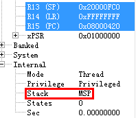
R13(SP)的值为0x20000FC0（MSP），R15(PC)的值为0x08000420。这两个值就是地址0x00000000和地址0x00000004处存放的内容。由于是从Flash启动，所以，实际上也就是0x08000000和0x08000004处存放的内容。可以从内存窗口中看出：
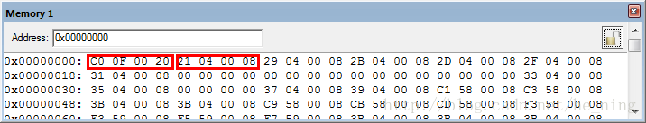
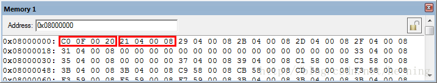
| 内存地址 | 内容 |
| 0x00000000 | C0H |
| 0x00000001 | 0FH |
| 0x00000002 | 00H |
| 0x00000003 | 20H |
| 0x00000004 | 21H |
| 0x00000005 | 04H |
| 0x00000006 | 00H |
| 0x00000007 | 08H |
从0x00000000处，取出1个字（32位，4个字节），为0x20000FC0，是堆栈指针SP的值。
从0x00000004处，取出1个字（32位，4个字节），为0x08000421，而PC指针读回0x08000420
它把末位的1变成了0，这个是由于内存对齐造成的，因为cortex-m3核PC的LSB一定读回0，因此指令至少是半字对齐的（《cortex-m3编程手册》）。
同样的结果在反汇编窗口也可以得到：
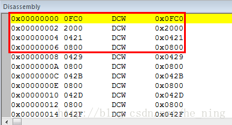
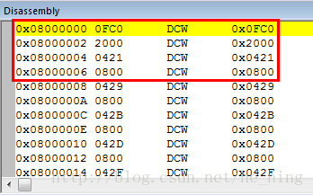
继续跟踪：此时程序寻址到PC指针指示的地址0x08000420处执行
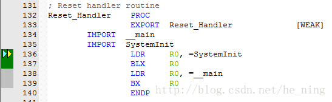
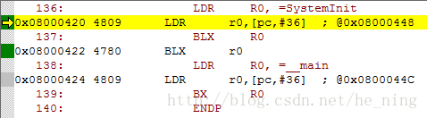
此处，指令 LDR R0,=SystemInit 将函数SystemInit的入口地址传给R0，从反汇编窗口可以看到指令被写成LDR r0,[pc,#36]，表明SystemInit的入口地址在存放在PC指针偏移36处，即0x08000420（+0x4）+0x24=0x08000448（因为CM3内部使用了指令流水线，读PC时返回的值是当前指令的地址+4《Cortex™-M3权威指南》）下一条指令在0x08000422处，BLX R0 将R0的值传给PC（必须保证加载到PC的数值是奇数（即LSB=1），传给PC后，PC的LSB读回0），调用SystemInit函数。这个函数里面开启了外部晶振，设置了PLL，除能了所有中断，设置了时钟为32MHz，并且重定位中断向量表在0x08000000处（这句在Flash启动时可以不需要，因为能从0x00000000映射到0x08000000）。从该函数返回后，用同样的方式调用C/C++标准实时库的__main函数，进行了一些处理（如用户堆栈初始化等，具体可以跟踪汇编代码，这部分网上已有过分析，不再赘述）后，调用main函数，进入C语言环境。
关于启动文件的中断向量表部分：
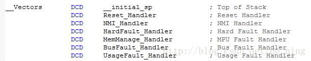
以上是在建立中断向量表（DCD伪指令表明，为每个中断向量分配了1个字的连续空间）。
实际上，对启动文件分析的资料已经很多，也足够详细，此处就不再赘述了。
基于上面分析，可以总结STM32启动的大体过程。
1、上电复位，CPU从0x00000000处获取栈顶指针MSP（默认使用主堆栈），从0x00000004处获取程序计数器PC（复位向量）。
2、MSP指针必然指向SRAM区的，因为堆栈必须建立在该区。
3、根据PC的值找到复位中断处理函数Reset_Handler
4、调用SystemInit函数。
5、调用__main函数，初始化用户堆栈
6、调用main函数，进入C语言环境


![]()

![]()

 1万+
1万+

 举报
举报
 1
1 回复:
是的1年前回复
回复:
是的1年前回复